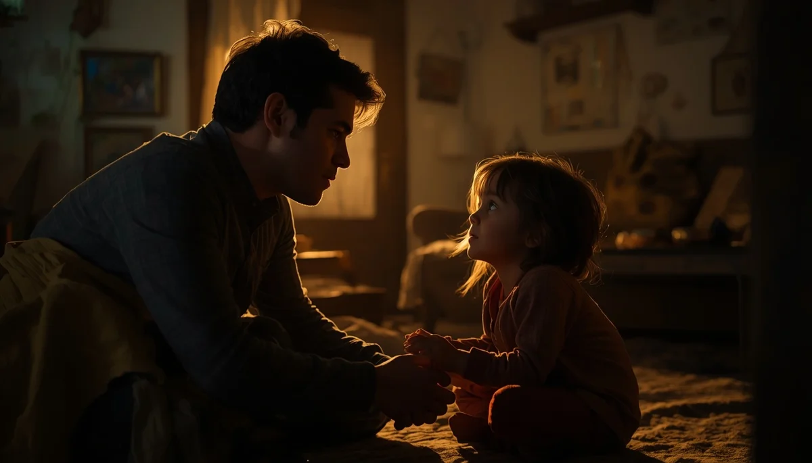

Un refugio frente al tabú
La presión social y el silencio que a menudo rodean las noches húmedas generan un peso emocional innecesario en la infancia. Cuando una familia afronta la enuresis desde el juicio o la impaciencia, el niño interioriza el mensaje erróneo de que está fallando a propósito. Desarmar este tabú requiere ante todo un cambio de mirada radical hacia la aceptación y el respeto por los ritmos de cada cuerpo.
Liberar el peso de la culpa infantil
Ningún niño moja la cama por pereza, por descuido o por llamar la atención. Se trata de un proceso involuntario donde el sistema madurativo aún está completando sus conexiones nocturnas. Comprender esto de manera genuina nos permite retirar cualquier reproche, comentario irónico o comparación, devolviéndole al menor la tranquilidad y la confianza en sí mismo.
"El refugio más seguro para un niño no es una noche seca, sino la certeza absoluta de que sus padres le quieren y le aceptan exactamente igual con la sábana mojada."
Construyendo un entorno seguro en casa
Crear un clima de normalidad absoluta ante los tropiezos nocturnos transforma por completo la experiencia. Si las mañanas transcurren sin dramas, susurros de preocupación o caras largas, el niño aprende que un contratiempo físico no define su valor ni altera el cariño incondicional del hogar.
El poder de la palabra y la validación
Nombrar lo que ocurre con naturalidad, sin dramatismos ni secretos, desarma la vergüenza. Cuando el niño comprueba que en su propia casa se habla del tema con apertura y respeto, su autoestima se blinda frente a posibles comentarios externos.
➔ Volver al índice de enuresis nocturna